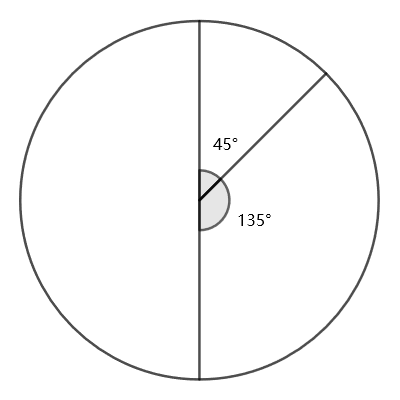

A round clock only has three hands: hour, minute, second. All hands look identical and move continuously. Moreover, there is no number or reference mark so that the "upright position" is unknown. The clock functions the same as a normal 12-hour analogue clock.
Despite the inconvenient design, for most time it is possible to tell the correct time (within a 12-hour cycle) from the clock, just by measuring accurately the angles between the hands. For example, if all three hands coincide, then the time must be 12:00:00.
Nevertheless, there are several moments where the clock shows an ambiguous reading. For example, the following moment could be either 1:30:00 or 7:30:00 (with the clock rotated $180^\circ$). Thus both 1:30:00 and 7:30:00 are ambiguous moments.
Note that even if two hands perfectly coincide, we can still see them as two distinct hands in the same position. Thus for example 3:00:00 and 9:00:00 are not ambiguous moments.

How many ambiguous moments are there within a 12-hour cycle?
solve() → ?